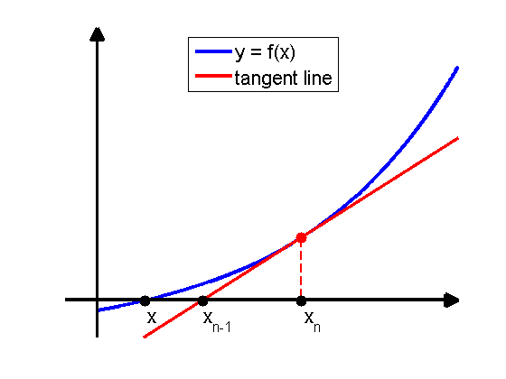

An illustration of Newton's method in 1D
figure('Color',[1,1,1]);
hold on;
xmin = 7.5; xmax = 10;
ymin = -1; ymax = 2.5e4;
domain = xmin+0.2:0.001:xmax;
e = exp(1);
f = @(x) e.^(x);
t = @(x) e^9*x-8*e^9;
plot(domain,f(domain),'-b','LineWidth',3.5);
plot(domain,t(domain),'-r','LineWidth',3);
plot([9,9],[3000,f(9)],'--r','LineWidth',2);
plot(9,f(9),'.r','MarkerSize',30);
plot(log(3000),3000,'.k','MarkerSize',30);
plot(8.3702,3000,'.k','MarkerSize',30);
plot(9,3000,'.k','MarkerSize',30);
axis off;
axis([xmin,xmax,ymin,ymax]);
annotation(gcf,'arrow',rel2absX([xmin,xmax]),rel2absY([3000,3000]),...
'HeadStyle','plain',...
'LineWidth',3);
annotation(gcf,'arrow',rel2absX([xmin+0.2,xmin+0.2]),...
rel2absY([ymin,ymax]), 'HeadStyle', 'plain',...
'LineWidth',3);
annotation(gcf,'textbox',[0.28 0.13 0.04981 0.07317],'String',{'x'},...
'FontSize',16,...
'FitBoxToText','off',...
'LineStyle','none');
annotation(gcf,'textbox',[0.39 0.13 0.04981 0.07317],...
'String',{'x_{n-1}'},...
'FontSize',16,...
'FitBoxToText','off',...
'LineStyle','none');
annotation(gcf,'textbox',[0.59 0.13 0.04981 0.07317],...
'String',{'x_n'},...
'FontSize',16,...
'FitBoxToText','off',...
'LineStyle','none');
set(gca,'FontSize',16);
legend('y = f(x)','tangent line','Location','North');
